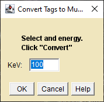

TagSlice to MuLin
Requires ImageJ 1.53k or higher. See the Home page for CT_Tools download and installation instructions.
A plugin for converting a "tag" image to linear attenuation.
This plugin creates a new 32-bit image of linear attenuation from a tag image.

TagSlice To MuLin Dialog
- Click on the tag image that you want to convert to make it the active window.
- Select the Tags To MuLin plugin from the ImageJ plugins menu.
- Enter the x-ray energy for the conversion.
- Click OK to create a new image of linear attenuation.